Чергування виходу Galaxy S і Galaxy Note з певним часовим проміжком протягом багатьох років здавалося чимось абсолютно непорушним - і зараз випуск флагманів S-серії на місяць раніше викликає певне острах: адже Note начебто був щойно, які можуть бути нововведення?! Але за фактом, звісно, різниця порівняно з інтервалами минулих років мінімальна, а нововведення викотили приблизно в тому самому масштабі, що й раніше: оновлені (нехай і не радикально) камери, дещо оновлений дизайн, ціла низка нових бездротових можливостей (частина з яких у Росії, імовірно, не буде доступною ніколи) і, найголовніше, нова апаратна платформа, яка, як стверджує виробник, нарешті по-справжньому зможе "підіпхнути" актуальні рішення Apple і Snapdragon.
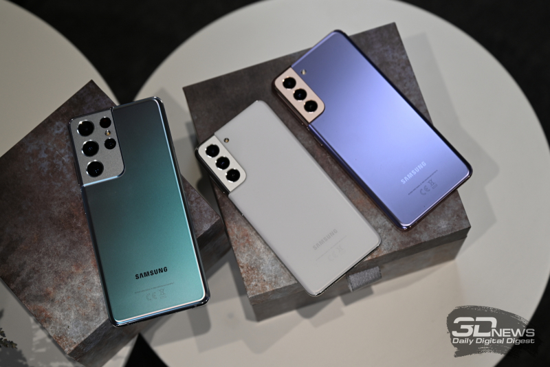Дуже багато чого (та що вже там, майже все), як зазвичай, про Samsung Galaxy S21 було відомо ще до анонсу. Витоки - обов'язкова деталь сучасного побуту великих корпорацій. І якраз "просочився" дизайн нових флагманів, що змушував задуматися про надто малий термін розробки - зовні це справді ті ж самі Note з мінімальними відхиленнями.
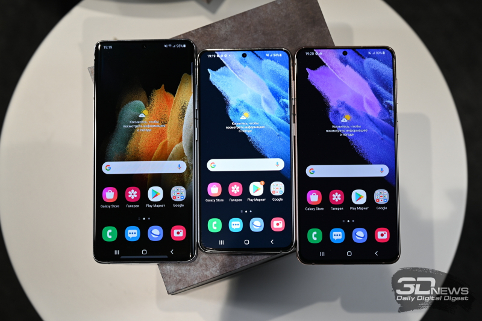Samsung Galaxy S21, так само як і Galaxy S20, існує в трьох іпостасях: відносно компактний S21, великий, але такий, що мало відрізняється за начинкою, S21+, ну і S21 Ultra - як то кажуть, смартфон на всі гроші. І всі вони йдуть шляхом "кластерних отворів", заданим Note20: тильні камери отримали великі, злегка втоплені в плашку об'єктиви, а сама плашка при цьому трохи виступає над корпусом; проблему фронтальної камери вирішено так само, як і раніше, - вона розмістилася в мініатюрному отворі в центрі рядка стану; бічні грані виконані з полірованого нефарбованого металу незалежно від колірного виконання корпусу.
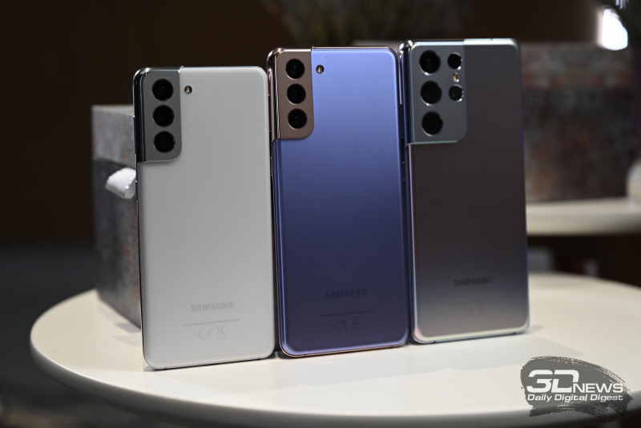Відмінності від "ноутів" не надто помітні, але все ж таки є - традиційно трохи більш заокруглені кути і те, як тильний блок камер "перетікає" на грані. Але це все ті ж Galaxy, що і в 2020-му, - зовнішній вигляд прямо говорить про те, що перед нами не революційне оновлення.
Конкретнішу розмову з усіх Galaxy S21 варто вести про S21 Ultra, який зібрав у собі максимум нового без будь-яких компромісів. Він відображає поточний рівень розвитку смартфонного підрозділу Samsung - саме його ми і візьмемо для повноцінного тестування. Зараз же поговоримо про ключові особливості корейського флагмана. І одразу відповідаємо на запитання, що з'явилося після численних чуток: чи закриває S21 Ultra історію Note? За словами представників компанії - ні, планів щодо зупинки знаменитої (зокрема і скандально) серії у Samsung немає. Але при цьому, так, S21 Ultra підтримує перо S Pen. Щоправда, як опцію - перо не лежить у коробці зі смартфоном, і на корпусі немає для нього спеціального гнізда. Фірмовий стилус нового покоління можна придбати разом зі спеціальними чохлами - на кшталт того, що можна побачити на фотографіях вище. В іншому жодних обмежень - екран, як і у випадку з Note, розроблявся спільно з Wacom, а S Pen продається у двох виконаннях - звичайному контактному і S Pen Pro з підтримкою безконтактних команд (як у Note). Тому підстави побоюватися, що Note20 був останнім, все ж є. Але офіційна відповідь - що їх не повинно бути. Повіримо?
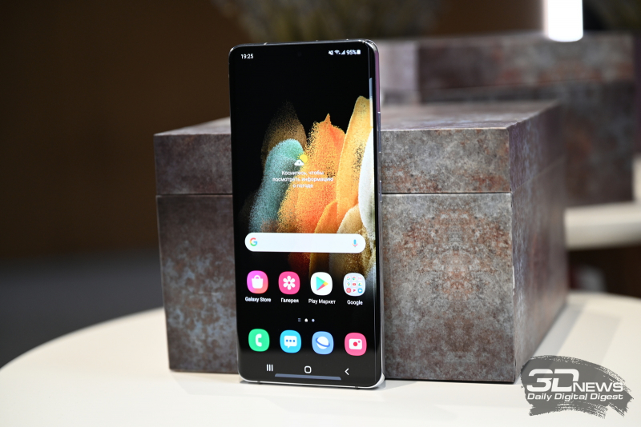Екран у S21 Ultra став трохи меншим за той, що був у S20 Ultra, - тепер 6,8 дюйма проти 6,9 дюйма в попередній моделі (і в Note20 Ultra). Смартфон все одно вийшов величезним, але невеликий зазор для нового Note якраз залишився. Панель Dynamic AMOLED 2X вигнута, роздільна здатність у неї, як і раніше, - WQHD+. Є підтримка режиму високої частоти оновлення - до 120 Гц. Як і раніше, коли її активувати, за вас вирішує сам смартфон.
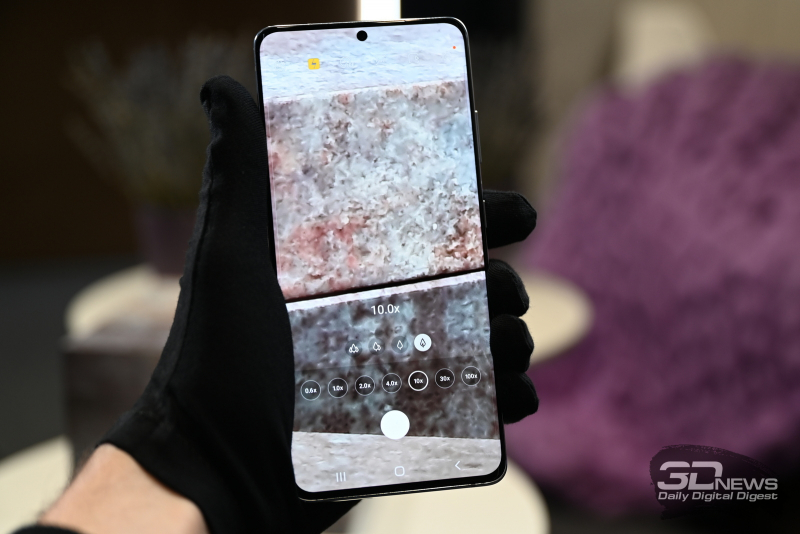Квадрокамера оновлена порівняно з тим, що було в S20 і Note20. Головний модуль знову отримав матрицю на 108 Мп (знімки за замовчуванням виходять з роздільною здатністю 12 Мп), але Samsung стверджує, що для неї вдосконалено автофокус, а зображення, одержувані за її допомогою, володіють ширшими динамічним діапазоном і колірною палітрою. Модулю з розширеним кутом огляду дістався 12-мегапіксельний сенсор - і він нарешті отримав автофокус. Дві інші, 10-мегапіксельні, камери відповідають за зум - причому обидві: одна пропонує триразове збільшення, друга - десятикратне. Фронтальна камера отримала 40-мегапіксельний сенсор. На всі (і тильні - незалежно від зуму, і фронтальну) камери можна знімати відео з роздільною здатністю 4К з частотою 60 кадрів за секунду. З урахуванням перемоги Samsung Galaxy Note20 Ultra в нашому порівняльному тесті камер флагманських смартфонів (нехай і з мінімальною перевагою) буде подвійно цікаво перевірити додатковий прогрес S21 Ultra щодо камер.
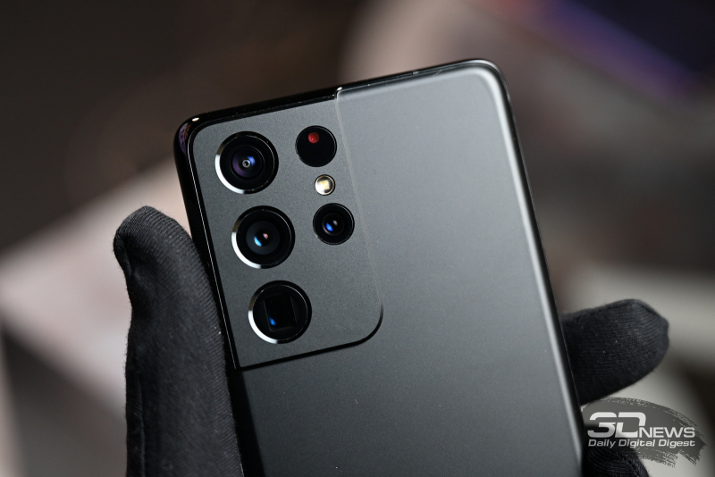Samsung Galaxy S21 Ultra стане, судячи з усього, першим смартфоном з модулем Wi-Fi 6E на борту - на жаль, офіційна підтримка мереж, що працюють на частоті 6 ГГц, швидше за все, не з'явиться в Росії ніколи. Якихось оптимістичних коментарів представники Samsung щодо цього стандарту дати не змогли. Те саме стосується і підтримки 5G - спільної для всіх трьох нових Galaxy S: вони працюють тільки в Sub-6-діапазонах, недоступних у Росії навіть на теоретичному рівні. А ось призабута, здавалося, вже технологія UWB (Ultra-Wide Band) працювати, за запевненнями виробника, повинна: вона доступна на S21 Ultra і S21 і дає змогу використовувати смартфон як цифровий автомобільний ключ і взаємодіяти із сумісними аксесуарами Samsung, першими з яких стали навушники Galaxy Buds Pro і брелок Galaxy Smart Tag, - смартфон може бачити їх на карті й обмінюватися з ними сигналами, якщо ви їх загубили.
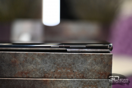Апаратна платформа, яка використовується у всіх Galaxy S21, була представлена парою днів раніше - це Exynos 2100, 5-нанометрове семиядерне рішення з одним найпотужнішим ядром Cortex-X1 з тактовою частотою 2,9 ГГц, трьома продуктивними Cortex-A78 і трьома енергоефективними ядрами Cortex-A55, а також графікою GPU ARM Mali G78. Виробник обіцяє 30-відсотковий приріст базової продуктивності та 40-відсотковий приріст ігрової - відносно показників Exynos 990. Пам'ять у всіх S21 - найшвидша. Накопичувач - UFS 3.1 ємністю 128, 256 або 512 Гбайт (для Ultra, у S21 і S21+ - 128 або 256 Гбайт), оперативка - LPDDR5, 12 або 16 Гбайт (теж для Ultra, у S21 і S21+ - безальтернативні 8 Гбайт). Слота для карт пам'яті в цьому поколінні флагманів Samsung немає. Як немає і міні-джека, що легко помітити на фотографіях. Акумулятор S21 Ultra - на 5000 мА-год. фото
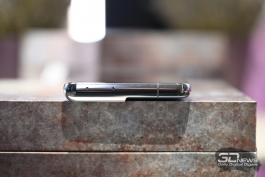Samsung Galaxy S21 Ultra пропонується у двох базових кольорах: "чорний фантом" і "срібний фантом" із задньою кришкою з матового загартованого скла. Також на офіційному сайті Samsung можна замовити кастомізовану версію: "титановий фантом", "синій фантом" або "бронзовий фантом". Ціни і дати виходу в продаж буде додано після заходу, присвяченого анонсу апаратів. Ну і обов'язкова деталь - усі S21 поставлятимуться без зарядного пристрою і навушників. Турбота про навколишнє середовище, ви ж усе розумієте.
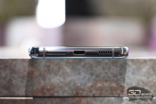Samsung Galaxy S21+ майже не поступається S21 Ultra габаритами і діагоналлю екрана - 6,7 дюйма, але в іншому це трохи простіший варіант флагмана. Екран плоский (не вигнутий), з роздільною здатністю Full HD+ - і він уже не дружить із S Pen.
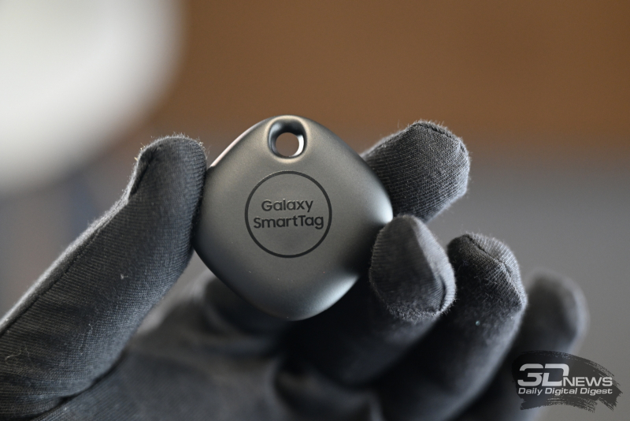Камера - потрійна і вже тільки з триразовим гібридним зумом (оптичний, судячи з усього, зі збільшенням лише в 1,1 раза, але використовується 64-мегапіксельний Quad Bayer-сенсор, завдяки якому і можливе масштабування). Зйомка в 4K 60p можлива вже тільки на тильну камеру, зате, як і у версії Ultra, доступна зйомка відео в 8K і кінематографічний режим, в якому можна вибирати попередній перегляд наступного ракурсу без переривання зйомки в поточному, також пропонується паралельна зйомка на фронтальну і тильну камери.
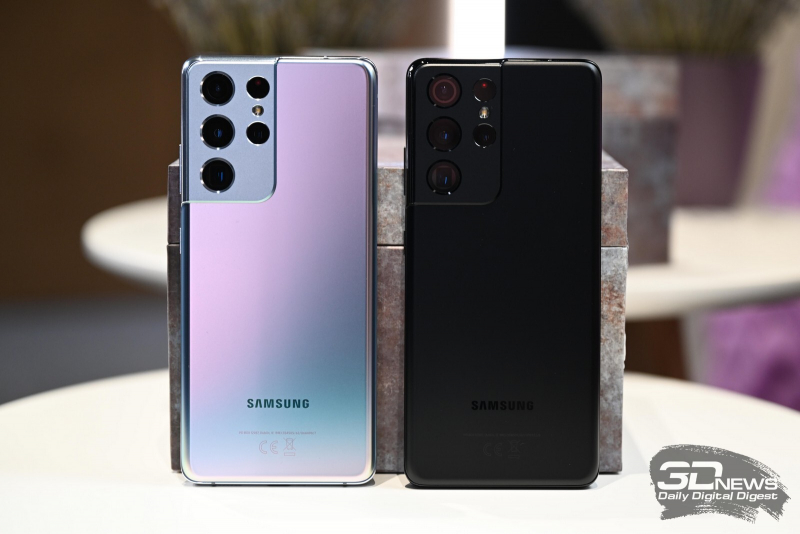Корпус Galaxy S21+ виконаний із загартованого скла Gorilla Glass Victus і доступний у трьох колірних варіаціях: "фіолетовий фантом", "чорний фантом" і "срібний фантом". Акумулятор - на 4 800 мА-год.
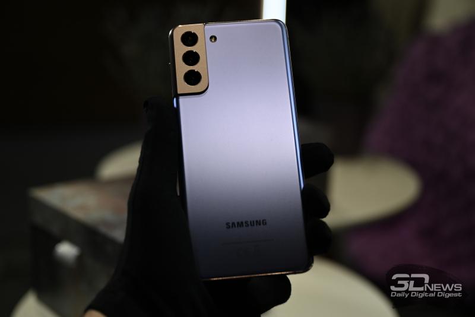Samsung Galaxy S21 дуже близький за характеристиками до S21+ - з точністю до відсутності технології UWD він пропонує приблизно той самий досвід, просто з більш компактним і інакше оформленим корпусом.
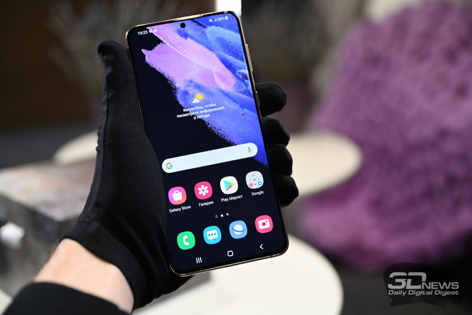На Galaxy S21 встановлений екран діагоналлю 6,2 дюйма роздільною здатністю Full HD+, а задня панель виконана з полікарбонату - трохи несподівано для флагмана, правда? Але відчувається корпус дуже приємно - і він, на відміну від корпусів S21+ і S21 Ultra, зовсім не слизький. Тож не назвав би це недоліком повною мірою - можливо, це, навпаки, перевага більш практичної і зручної моделі.
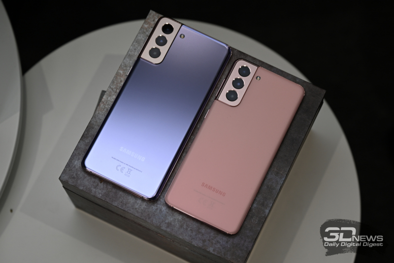Кольорові варіації: "фіолетовий фантом", "сірий фантом", "рожевий фантом", "білий фантом".
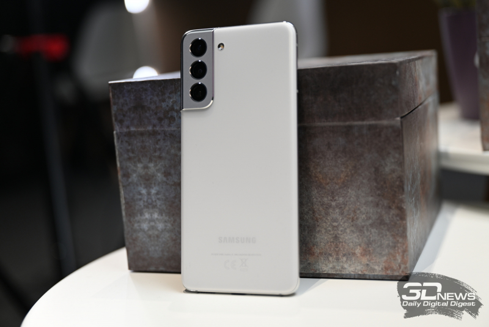 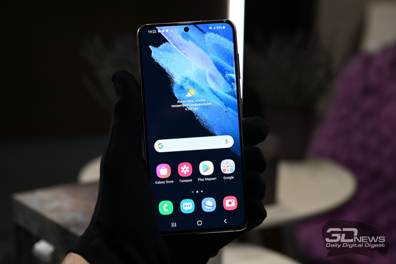Оновився дизайн, додалася інтелектуальна система активного шумозаглушення, покращилася акустична складова, що отримала два динаміки (11-мм низькочастотний і 6,5-мм високочастотний), з'явилася згадана вище функція SmartThings Find, що дає змогу шукати навушники навіть поза зоною дії Bluetooth. До речі, через Bluetooth навушники можна під'єднувати відразу до двох пристроїв - наприклад, до смартфона і комп'ютера - і вільно перемикатися між ними. Також навушники захищені від вологи за стандартом IPX7. Galaxy Buds Pro пропонуються в чорному, сріблястому і фіолетовому колірних виконаннях. Ну а більше подробиць розповімо вже в огляді Galaxy S21 Ultra.